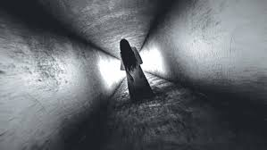
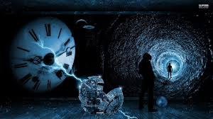
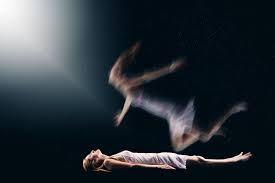
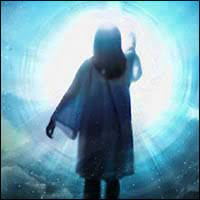

¿QUÉ ES?
Lo paranormal, se refiere a eventos o experiencias que no pueden ser explicados por la ciencia actual, y que son objeto de estudio de la parapsicología. En otras palabras, son fenómenos que parecen ir más allá de lo que la ciencia considera "normal" o explicable dentro de las leyes conocidas de la naturaleza.
El término "paranormal" se deriva de "para-" (que significa "más allá" o "al lado") y "normal", lo que implica que estos fenómenos están fuera de la norma o no pueden ser explicados dentro de las explicaciones científicas.
EJEMPLOS DE ALGUNOS SON:
Fantasmas y apariciones:

es el alma errante o espíritu de una persona muerta o un animal no humano que, según algunas personas, se manifiestan entre los vivos de forma perceptible (por ejemplo; visual, a través de sonidos, aromas o desplazando objetos —poltergeist—) y con los cuales a veces presentan un vínculo emocional, como que ellos los conocían en vida o personas cercanas suyas. En el folclore de muchas culturas, las descripciones de los fantasmas varían ampliamente, desde una presencia invisible hasta formas tenues translúcidas o apenas visibles o formas realistas y reales. El intento deliberado de contactar con el espíritu de una persona fallecida se conoce como nigromancia o, en el espiritismo, como una sesión espiritista. Otros términos asociados con él son aparición, embrujo, fantasma, poltergeist, sombra, espectro, espíritu, demonio y necrófago. Algunos ejemplos son: los Hantu, del Sudeste de Asia, los Obake, de Japón y las Banshee, de Irlanda.
Telepatía y telequinesis:
 La telequinesis (de τῆλε têle 'lejos' y κίνησις kínēsis 'movimiento') o psicoquinesis (del griego ψυχή "mente" y κίνησις "movimiento"), es una habilidad psíquica que permite a una persona influir en un sistema físico sin interacción física.Históricamente, los experimentos sobre telequinesis han sido criticados por carecer de controles adecuados y reproducibilidad.No existe evidencia convincente de que la telequinesis sea un fenómeno real, y la misma es generalmente considerada una pseudociencia.
La telequinesis (de τῆλε têle 'lejos' y κίνησις kínēsis 'movimiento') o psicoquinesis (del griego ψυχή "mente" y κίνησις "movimiento"), es una habilidad psíquica que permite a una persona influir en un sistema físico sin interacción física.Históricamente, los experimentos sobre telequinesis han sido criticados por carecer de controles adecuados y reproducibilidad.No existe evidencia convincente de que la telequinesis sea un fenómeno real, y la misma es generalmente considerada una pseudociencia.
Viajes en el tiepmo:

Son un concepto que ha fascinado a la humanidad durante siglos, explorado tanto en la ciencia como en la ficción. Se refieren a la posibilidad de desplazarse hacia el pasado o el futuro, similar a cómo nos movemos en el espacio.El viaje a través del tiempo o viaje transtemporal es un concepto de desplazamiento hacia delante o atrás en diferentes puntos del tiempo, similar a como se hace un desplazamiento en el espacio. Además, algunas interpretaciones de viaje en el tiempo sugieren la posibilidad de viajes entre realidades o universos paralelos.Este artículo analiza la posibilidad teórica y técnica de viajes en el tiempo, y la posibilidad de que existan paradojas asociadas a dicho viaje a través del tiempo (por ejemplo evitar el nacimiento de nuestros propios antepasados o la paradoja de los gemelos).
Experiencias fuera del cuerpo:

Son fenómenos en los que una persona siente que su conciencia se separa de su cuerpo físico, permitiéndole observarse desde una perspectiva externas la sensación de estar flotando en el aire proyectado fuera del cuerpo. En algunos casos, los creyentes o partidarios de este fenómeno indican que la persona puede experimentar la autoscopia (posibilidad de ver su propio cuerpo desde el punto de vista de un observador externo) o incluso el poder proyectarse en otros lugares. Esta misma sensación se denomina proyección astral, viaje astral , desdoblamiento astral o proyección de la conciencia cuando se trata de un tipo de experiencia subjetiva (consciente o inconsciente), por la cual muchas personas dicen haber experimentado el fenómeno de una separación, «desdoblamiento» de lo que llaman el cuerpo astral (o cuerpo sutil), del cuerpo físico,entre otros.Neurocientíficos y psicólogos consideran a este tipo de experiencias como una disociación provocada por diferentes factores psicológicos y neurológicos.
Sanación paranormal:

Es un fenómeno que se asocia con la capacidad de curar enfermedades o aliviar dolencias mediante métodos no convencionales, como la energía espiritual, la imposición de manos o rituales místicos. Incluye prácticas como la curación con energía, el uso de cristales, la meditación, la oración, la hipnosis, la vibración del sonido, la aromaterapia, entre otras. Se basa en la idea de que la mente y el cuerpo están interconectados, y que la actividad mental puede influir en la salud física y el bienestar. El éxito de la sanación paranormal puede depender de las creencias y expectativas de la persona que busca curación. La fe en el proceso de curación y la esperanza en la recuperación pueden ser factores importantes en la sanación paranormal. Algunas personas que han experimentado sanación paranormal reportan tener experiencias anómalas, como visiones, sensaciones extrañas o la percepción de energías no convencionales.